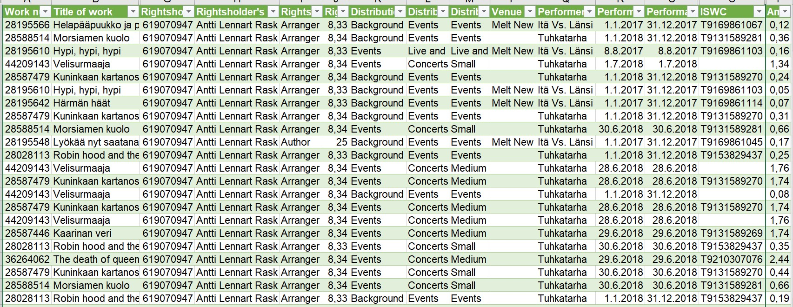

fakeR, charlatan and rcorpora in action
We’ll be using three main packages. First one is called fakeR:
The package allows for simulating datasets of various variable types. This includes datasets containing categorical and quantitative variables as well as datasets of clustered time series observations. The package functions are also useful for maintaining a similar structure of missingness if one is to exist in the existing dataset.
So, despite the similar name - fakeR vs. Faker - this package isn’t actually for creating fake data. For that, we have charlatan that is actually inspired by and borrowing from Python’s Faker.
The third package, rcorpora is a collection of small corpuses. And while they weren’t necessarily created for the purpose that we will be using them, getting a little creative doesn’t hurt. As you will see, some of the solutions might not be suitable for actual production use, but this post works, hopefully, as an inspiration to get started. So, with that, let’s get started!
1. Let’s get ready, part 1
Before we go any further, I’m going to load the other packages we’ll be needing today (for clarity’s sake, I’m loading the main packages when they are first needed):
library(tidyverse)
# Prerequisite to everything
library(writexl)
# My go-to package for writing Excel files
library(readxl)
# My go-to package for reading Excel filesBefore getting to the ‘main course’, let’s start with something familiar (for those of you who have read the previous blog posts about mining text from PDFs) as a way to introduce you to fakeR.
For that, we need to read in the Excel file that was created last time:

We’ll read in the excel file. Notice that for fakeR to work, it’s important that we create a data frame and not a tibble (you can read about the differences between the two in here)!
excel_from_pdf <-
read_xlsx("index_files/excel_from_pdf_with_image_2.xlsx") %>%
as.data.frame() # Because of fakeR, we'll be using data frames today.And since factor isn’t a possible col_type for read_xlsx() to define, let’s go ahead and mutate() the rank column instead.
excel_from_pdf <- excel_from_pdf %>%
mutate(rank = rank %>% as_factor())str(excel_from_pdf)
## 'data.frame': 18 obs. of 4 variables:
## $ artist : chr "Lil Nas X" "Blind Channel" "SANNI" "Haloo Helsinki!" ...
## $ track : chr "MONTERO (Call Me By Your Name)" "Dark Side" "Pettäjä" "Piilotan mun kyyneleet" ...
## $ rank : Factor w/ 18 levels "1","2","3","4",..: 1 2 3 4 5 6 7 8 9 10 ...
## $ streams: num 275091 260403 255770 238089 236820 ...excel_from_pdf
## artist
## 1 Lil Nas X
## 2 Blind Channel
## 3 SANNI
## 4 Haloo Helsinki!
## 5 Doja Cat
## 6 Cledos, BEHM
## 7 Masked Wolf
## 8 BEHM
## 9 Pyhimys, Eino Grön
## 10 costee
## 11 Riton, Nightcrawlers
## 12 Tion Wayne, Russ Millions
## 13 Nathan Evans
## 14 Dua Lipa
## 15 Etta
## 16 BEHM
## 17 Justin Bieber
## 18 Keko Salata
## track
## 1 MONTERO (Call Me By Your Name)
## 2 Dark Side
## 3 Pettäjä
## 4 Piilotan mun kyyneleet
## 5 Kiss Me More (feat. SZA)
## 6 Life (Sun luo)
## 7 Astronaut In The Ocean
## 8 Frida
## 9 Hyvät hautajaiset
## 10 Ne voi liittyy (feat. BIZI)
## 11 Friday (feat. Mufasa & Hypeman) - Dopamine Re-Edit
## 12 Body (Remix) [feat. ArrDee, E1 (3x3), ZT (3x3), Bugzy Malone, Buni, Fivio Foreign & Darkoo]
## 13 Wellerman - Sea Shanty / 220 KID x Billen Ted Remix
## 14 Levitating (feat. DaBaby)
## 15 Prinsessa
## 16 Hei rakas
## 17 Peaches (feat. Daniel Caesar & Giveon)
## 18 Kaipaan sua (feat. Boyat & Samuli Heimo)
## rank streams
## 1 1 275091
## 2 2 260403
## 3 3 255770
## 4 4 238089
## 5 5 236820
## 6 6 224839
## 7 7 202630
## 8 8 200910
## 9 9 196586
## 10 10 194852
## 11 11 186470
## 12 12 182369
## 13 13 182353
## 14 14 180922
## 15 15 175544
## 16 16 168578
## 17 17 167833
## 18 18 1585432. Simulate data with fakeR
fakeR will, in essence, use the existing data to come up with new data. What we want to do, at this point, is to keep the artist and track data as they are. We just want to scramble the streams and then re-create the rank data according to the new descending order of streams.
One interesting argument for simulate_dataset() is stealth.level. Here’s what the documentation has to say about it:
When set to 1 (default), takes into account the covariances between all the unordered factors and the covariances between the numeric and ordered factors. When set to 2, simulates each variable independently. When set to 3, does not take into account any covariances and instead randomly samples from a uniform distribution ranging from the min to the max of the data for each variable.
For this exercise, I decided to go with stealth.level = 3, because I wanted to limit the range of the new values between min and max of the original data.
library(fakeR)
sim_excel_from_pdf <- simulate_dataset(excel_from_pdf,
# With ignore, we can decide which columns will be untouched by the simulation.
ignore = c("artist",
"rank",
"track"),
stealth.level = 3) %>%
# Let's arrange the rows according to the streams (descending)
arrange(desc(streams)) %>%
# And then add new values to rank, by using row_number()
mutate(rank = row_number() %>% as_factor()) %>%
# Let's use select to put the columns back in the original order
select(artist, track, rank, streams)
write_xlsx(sim_excel_from_pdf, "index_files/sim_excel.xlsx")Here’s a picture from the simulated data, back in Excel:

By the way, the green triangles on rank values come from the fact that excel doesn’t recognise the factor data type, which is good to keep in mind.
You should also note that that picture is essentially a snapshot of one simulation. The stream amounts will differ from those that you see elsewhere on the post.
Now, for easier comparison between original and simulated data, here are summaries of streams from both:
# Original
summary(excel_from_pdf$streams)
## Min. 1st Qu. Median Mean 3rd Qu. Max.
## 158543 181280 195719 204922 233825 275091
# Simulation
summary(sim_excel_from_pdf$streams)
## Min. 1st Qu. Median Mean 3rd Qu. Max.
## 167765 183538 217177 217129 247184 274408As you can see, they quite closely resemble each other’s range etc. (thanks to that argument stealth.level = 3), but are not exactly same. This can be a good thing, if the idea is to show your ‘audience’ what type of values are possible. But if that already gives away too much information, you are probably better off with something even more random.
Okay, that’s some fakeR to start with. Let’s now move to the main exercise. We’ll come back to this package a bit later.
3. Let’s get ready, part 2
I thought it would be interesting for us to use some actual distribution data from Teosto, my employer and the Finnish PRO (Performance Rights Organization). In a nutshell, the data tells what Teosto has payed me in June 2019 for songs that were performed in 2017 and 2018 + some additional information.
Normally, I wouldn’t be able to show the original data due to its sensitive nature. But, since I happen to be a songwriter myself and a Teosto member, I can share my own data with you. That way, we can go through the process of anonymizing all of the data and you’ll be able to compare the end result with the original.
Here are some of the columns (there are 25 in total) of the original file: 
I don’t wish to use the original column names, because they are not very R-friendly, so let’s create this vector to replace them with:
col_names <- c("work_number",
"work_title",
"distribution_source",
"distribution_id",
"distribution_name",
"distribution_date",
"rightsholder_ipi_number",
"rightsholder_name",
"rightsholder_role",
"rightsholder_share_pct",
"distribution_category_1",
"distribution_category_2",
"distribution_category_3",
"original_name_of_service_or_provider",
"programme_name",
"venue_name",
"performer_name",
"performance_date_start",
"performance_date_end",
"performance_country",
"iswc_code",
"isrc_code",
"type_of_right",
"quantity",
"amount_eur")Next, let’s read in the csv-file that I’ve downloaded from Teosto web service. We’ll be using read_csv() and I’ve defined the column types with the handy col_types argument (where each character represents one column):
- c = character
- i = integer
- n = number
- d = double
- l = logical
- f = factor
- D = date
- T = date time
- t = time
- ? = guess
- _ or - = skip
Let’s also use that col_names vector from before to define the column names.
distribution_csv <- read_csv(
"index_files/Rask_Antti_Lennart_2019-04-16_2019-06-30.csv",
col_types = "icfifDicf?fffcccfDDfccfi?",
col_names = col_names,
# Skip the first row with the titles on it:
skip = 1) %>%
as.data.frame() # Because of fakeR, we'll be using data frames today.This is what the data looks just after having been read in:
head(distribution_csv)
## work_number work_title distribution_source distribution_id
## 1 28195566 Helapääpuukko ja puntari Teosto domestic 121
## 2 28588514 Morsiamen kuolo Teosto domestic 121
## 3 28195610 Hypi, hypi, hypi Teosto domestic 121
## 4 44209143 Velisurmaaja Teosto domestic 121
## 5 28587479 Kuninkaan kartanossa Teosto domestic 121
## 6 28195610 Hypi, hypi, hypi Teosto domestic 121
## distribution_name distribution_date rightsholder_ipi_number
## 1 Teosto June 2019-06-13 619070947
## 2 Teosto June 2019-06-13 619070947
## 3 Teosto June 2019-06-13 619070947
## 4 Teosto June 2019-06-13 619070947
## 5 Teosto June 2019-06-13 619070947
## 6 Teosto June 2019-06-13 619070947
## rightsholder_name rightsholder_role rightsholder_share_pct
## 1 Antti Lennart Rask Arranger 833
## 2 Antti Lennart Rask Arranger 834
## 3 Antti Lennart Rask Arranger 833
## 4 Antti Lennart Rask Arranger 834
## 5 Antti Lennart Rask Arranger 834
## 6 Antti Lennart Rask Arranger 833
## distribution_category_1 distribution_category_2 distribution_category_3
## 1 Background music Events Events
## 2 Background music Events Events
## 3 Events Live and DJ gigs Live and DJ gigs
## 4 Events Concerts and festivals Small
## 5 Background music Events Events
## 6 Background music Events Events
## original_name_of_service_or_provider programme_name venue_name
## 1 <NA> <NA> Melt New York Eatery
## 2 <NA> <NA> <NA>
## 3 <NA> <NA> Melt New York Eatery
## 4 <NA> <NA> <NA>
## 5 <NA> <NA> <NA>
## 6 <NA> <NA> Melt New York Eatery
## performer_name performance_date_start performance_date_end
## 1 Itä Vs. Länsi 2017-01-01 2017-12-31
## 2 Tuhkatarha 2018-01-01 2018-12-31
## 3 Itä Vs. Länsi 2017-08-08 2017-08-08
## 4 Tuhkatarha 2018-07-01 2018-07-01
## 5 Tuhkatarha 2018-01-01 2018-12-31
## 6 Itä Vs. Länsi 2017-01-01 2017-12-31
## performance_country iswc_code isrc_code type_of_right quantity amount_eur
## 1 Finland T9169861067 <NA> Performing 1 0,12
## 2 Finland T9131589281 <NA> Performing 1 0,36
## 3 Finland T9169861103 <NA> Performing 1 0,16
## 4 Finland <NA> <NA> Performing 1 1,34
## 5 Finland T9131589270 <NA> Performing 1 0,24
## 6 Finland T9169861103 <NA> Performing 1 0,05Lots of columns there. Some of them seem to have the same information throughout:
- distribution_source
- distribution_id
- distribution_name
- distribution_date
- original_name_of_service_or_provider
- programme name
- performance_country
- isrc_code
- type_of_right
- quantity
Let’s get rid of them for now with the negative select(), so that it’s easier to focus on the ones that we’ll be taking care of today. We know that if we wish to use them later, we can always find them from the original data frame distribution_csv (although we probably won’t in this exercise).
distribution_2_csv <- distribution_csv %>%
select(
-c(
distribution_source,
distribution_id,
distribution_name,
distribution_date,
original_name_of_service_or_provider,
programme_name,
performance_country,
isrc_code,
type_of_right,
quantity
)
)As you can see, it’s now much easier to wrap your head around it.
head(distribution_2_csv)
## work_number work_title rightsholder_ipi_number
## 1 28195566 Helapääpuukko ja puntari 619070947
## 2 28588514 Morsiamen kuolo 619070947
## 3 28195610 Hypi, hypi, hypi 619070947
## 4 44209143 Velisurmaaja 619070947
## 5 28587479 Kuninkaan kartanossa 619070947
## 6 28195610 Hypi, hypi, hypi 619070947
## rightsholder_name rightsholder_role rightsholder_share_pct
## 1 Antti Lennart Rask Arranger 833
## 2 Antti Lennart Rask Arranger 834
## 3 Antti Lennart Rask Arranger 833
## 4 Antti Lennart Rask Arranger 834
## 5 Antti Lennart Rask Arranger 834
## 6 Antti Lennart Rask Arranger 833
## distribution_category_1 distribution_category_2 distribution_category_3
## 1 Background music Events Events
## 2 Background music Events Events
## 3 Events Live and DJ gigs Live and DJ gigs
## 4 Events Concerts and festivals Small
## 5 Background music Events Events
## 6 Background music Events Events
## venue_name performer_name performance_date_start
## 1 Melt New York Eatery Itä Vs. Länsi 2017-01-01
## 2 <NA> Tuhkatarha 2018-01-01
## 3 Melt New York Eatery Itä Vs. Länsi 2017-08-08
## 4 <NA> Tuhkatarha 2018-07-01
## 5 <NA> Tuhkatarha 2018-01-01
## 6 Melt New York Eatery Itä Vs. Länsi 2017-01-01
## performance_date_end iswc_code amount_eur
## 1 2017-12-31 T9169861067 0,12
## 2 2018-12-31 T9131589281 0,36
## 3 2017-08-08 T9169861103 0,16
## 4 2018-07-01 <NA> 1,34
## 5 2018-12-31 T9131589270 0,24
## 6 2017-12-31 T9169861103 0,05Once that’s done, we can concentrate on the first anonymization.
4. Create fake people names with charlatan
You could use charlatan to create fake data for these (and more to come):
- person names
- jobs
- phone numbers
- colors: names, hex, rgb
- credit cards
- DOIs
- numbers in range and from distributions
- gene sequences
- geographic coordinates
- emails
- URIs, URLs, and their parts
- IP addresses
For today’s exercise, we’ll only be creating person names, though. We first need to create an environment with fraudster() (you can read more about environments here) and then use mutate() to replace the original rightsholder_name (my name, that is) with a fake one.
library(charlatan)
charlatan <- fraudster() # This creates the environment to be used later
distribution_3_csv <- distribution_2_csv %>%
mutate(rightsholder_name = charlatan$name())# Original
head(distribution_csv$rightsholder_name)
## [1] "Antti Lennart Rask" "Antti Lennart Rask" "Antti Lennart Rask"
## [4] "Antti Lennart Rask" "Antti Lennart Rask" "Antti Lennart Rask"
# Fake
head(distribution_3_csv$rightsholder_name)
## [1] "Brisa Bradtke-Eichmann" "Brisa Bradtke-Eichmann" "Brisa Bradtke-Eichmann"
## [4] "Brisa Bradtke-Eichmann" "Brisa Bradtke-Eichmann" "Brisa Bradtke-Eichmann"Nice! Such an easy way to create fake names. In the follow-up blog post we will create a localized fake name generator (for Finnish names) as a possible replacement for this one.
5. Using tidyverse and base R to create some fake numbers
Part of the anonymizing can be done with the everyday tools.
It’s no surprise that I’m a big fan of tidyverse. If you are studying R, you are probably familiar with it, but if not, it’s a collection of packages that make it easier to clean and analyse data in R.
The core packages (as of tidyverse 1.3.0). Click the name for a cheat sheet:
In this exercise we have been and will be using mostly dplyr and stringr, but let’s not forget that the base R has some very useful functions, like sample().
First, let’s sample() the rightsholder_ipi_number (IPI = Interested Parties Information). We would like the numbers to resemble the real numbers and that is why we use min() and max() of the original values to give a believable range to sample from.
Let’s then do the same for work_number. The next two things we could do in a separate mutate(), but while we’re at it, let’s remove the leading “T” from iswc_code (ISWC = International Standard musical Work Code), so that it can be handled as a numeric value in the next step of the exercise.
As a bonus, let’s correct the rightsholder_share_pct, because it went a bit wonky during the import.
distribution_4_csv <- distribution_3_csv %>%
mutate(
rightsholder_ipi_number = sample(
min(rightsholder_ipi_number):max(rightsholder_ipi_number),
size = nrow(.),
replace = FALSE),
work_number = sample(
min(work_number):max(work_number),
size = nrow(.),
replace = FALSE),
# With a little bit of regex, we'll remove the leading "T" from ISWC code, so that we can later work with it as a numeric value.
iswc_code = str_remove_all(iswc_code, "^T"),
# A simple division will give us a correct rightsholder share percentage. 8,33 became 833 and 25,0 became 250 etc. in the import, so we need to take that into consideration in this mutate().
rightsholder_share_pct = ifelse(
rightsholder_share_pct == 250,
rightsholder_share_pct / 10,
rightsholder_share_pct / 100),
rightsholder_share_pct = as.character(
str_replace_all(
rightsholder_share_pct,
"\\.",
"\\,"))
)We can now also pick iswc_code as a separate vector to be used later for finding the min and max values for it.
iswc_code <- distribution_4_csv$iswc_codeAnd this is what the latest changes look like, compared to the original:
# Original
head(distribution_csv) %>%
select(
rightsholder_share_pct,
rightsholder_ipi_number,
work_number,
iswc_code
)
## rightsholder_share_pct rightsholder_ipi_number work_number iswc_code
## 1 833 619070947 28195566 T9169861067
## 2 834 619070947 28588514 T9131589281
## 3 833 619070947 28195610 T9169861103
## 4 834 619070947 44209143 <NA>
## 5 834 619070947 28587479 T9131589270
## 6 833 619070947 28195610 T9169861103# Fake and/or corrected
head(distribution_4_csv) %>%
select(
rightsholder_share_pct,
rightsholder_ipi_number,
work_number,
iswc_code
)
## rightsholder_share_pct rightsholder_ipi_number work_number iswc_code
## 1 8,33 370920627 40281254 9169861067
## 2 8,34 597137869 34235492 9131589281
## 3 8,33 69762901 32917123 9169861103
## 4 8,34 239954359 44167446 <NA>
## 5 8,34 445863699 41563174 9131589270
## 6 8,33 174888075 42788497 9169861103Now, let’s get to randomizing the iswc_code.
First, we’ll use str_replace() from stringr inside a mutate() to replace all the non-empty cells (that’s what the bit of regex "^(?!\\s*$).+" is for) with a new sampled value. Again we’re using the min and max of the original values to make the new values feel more ‘real’.
distribution_5_csv <- distribution_4_csv %>%
mutate(
iswc_code =
str_replace(
iswc_code,
"^(?!\\s*$).+",
replacement = as.character(
sample(
min(iswc_code, na.rm = TRUE):max(iswc_code, na.rm = TRUE),
size = nrow(.),
replace = FALSE)))
)Then we need to return the leading “T” to iswc_code to match the original. Now, if we only used str_glue() (again, from the stringr package), the cells containing NA would also get the leading “T”. And we don’t want that.
Enter ifelse(). If the cell contains NA, replace it with NA (so basically, do nothing). Otherwise add the leading “T” to the cell.
distribution_5_csv$iswc_code <- ifelse(
is.na(distribution_5_csv$iswc_code),
NA,
str_glue("T{distribution_5_csv$iswc_code}")
)We can now compare the sampled ISWC codes with the original ones. This way, we have retained the ratio of NAs of the original.
# Original
head(distribution_csv$iswc_code)
## [1] "T9169861067" "T9131589281" "T9169861103" NA "T9131589270"
## [6] "T9169861103"# Fake
head(distribution_5_csv$iswc_code)
## [1] "T9198288787" "T9147055834" "T9199362119" NA "T9143534917"
## [6] "T9146936323"Looks convincing!
If we wanted, we could fade it by skipping the str_replace() altogether and using the same methods that we did for IPI and work numbers. Then we would have no need for the ifelse() either, just the str_glue() part would do.
6. Create fake work titles, performer and venue names with rcorpora
To get some more fake names, let’s get a bit more creative with rcorpora. Let’s first see a list of the available small corpuses.
library(rcorpora)
# Just to see what all is out there:
corpora()
## [1] "animals/birds_antarctica"
## [2] "animals/birds_north_america"
## [3] "animals/cats"
## [4] "animals/collateral_adjectives"
## [5] "animals/common"
## [6] "animals/dinosaurs"
## [7] "animals/dog_names"
## [8] "animals/dogs"
## [9] "animals/donkeys"
## [10] "animals/horses"
## [11] "animals/ponies"
## [12] "archetypes/artifact"
## [13] "archetypes/character"
## [14] "archetypes/event"
## [15] "archetypes/setting"
## [16] "architecture/passages"
## [17] "architecture/rooms"
## [18] "art/isms"
## [19] "colors/crayola"
## [20] "colors/dulux"
## [21] "colors/google_material_colors"
## [22] "colors/paints"
## [23] "colors/palettes"
## [24] "colors/web_colors"
## [25] "colors/xkcd"
## [26] "corporations/cars"
## [27] "corporations/djia"
## [28] "corporations/fortune500"
## [29] "corporations/industries"
## [30] "corporations/nasdaq"
## [31] "corporations/newspapers"
## [32] "divination/tarot_interpretations"
## [33] "divination/zodiac"
## [34] "film-tv/game-of-thrones-houses"
## [35] "film-tv/iab_categories"
## [36] "film-tv/netflix-categories"
## [37] "film-tv/popular-movies"
## [38] "film-tv/tv_shows"
## [39] "foods/apple_cultivars"
## [40] "foods/bad_beers"
## [41] "foods/beer_categories"
## [42] "foods/beer_styles"
## [43] "foods/breads_and_pastries"
## [44] "foods/combine"
## [45] "foods/condiments"
## [46] "foods/curds"
## [47] "foods/fruits"
## [48] "foods/herbs_n_spices"
## [49] "foods/hot_peppers"
## [50] "foods/iba_cocktails"
## [51] "foods/menuItems"
## [52] "foods/pizzaToppings"
## [53] "foods/sandwiches"
## [54] "foods/sausages"
## [55] "foods/scotch_whiskey"
## [56] "foods/tea"
## [57] "foods/vegetable_cooking_times"
## [58] "foods/vegetables"
## [59] "foods/wine_descriptions"
## [60] "games/bannedGames/argentina/bannedList"
## [61] "games/bannedGames/brazil/bannedList"
## [62] "games/bannedGames/china/bannedList"
## [63] "games/bannedGames/denmark/bannedList"
## [64] "games/cluedo"
## [65] "games/dark_souls_iii_messages"
## [66] "games/jeopardy_questions"
## [67] "games/pokemon"
## [68] "games/scrabble"
## [69] "games/street_fighter_ii"
## [70] "games/trivial_pursuit"
## [71] "games/wrestling_moves"
## [72] "games/zelda"
## [73] "geography/canada_provinces_and_territories"
## [74] "geography/canadian_municipalities"
## [75] "geography/countries"
## [76] "geography/countries_with_capitals"
## [77] "geography/english_towns_cities"
## [78] "geography/japanese_prefectures"
## [79] "geography/london_underground_stations"
## [80] "geography/nationalities"
## [81] "geography/norwegian_cities"
## [82] "geography/nyc_neighborhood_zips"
## [83] "geography/oceans"
## [84] "geography/rivers"
## [85] "geography/sf_neighborhoods"
## [86] "geography/us_airport_codes"
## [87] "geography/us_cities"
## [88] "geography/us_counties"
## [89] "geography/us_metropolitan_areas"
## [90] "geography/us_state_capitals"
## [91] "geography/venues"
## [92] "geography/winds"
## [93] "governments/mass-surveillance-project-names"
## [94] "governments/nsa_projects"
## [95] "governments/uk_political_parties"
## [96] "governments/us_federal_agencies"
## [97] "governments/us_mil_operations"
## [98] "humans/2016_us_presidential_candidates"
## [99] "humans/atus_activities"
## [100] "humans/authors"
## [101] "humans/bodyParts"
## [102] "humans/britishActors"
## [103] "humans/celebrities"
## [104] "humans/descriptions"
## [105] "humans/englishHonorifics"
## [106] "humans/famousDuos"
## [107] "humans/firstNames"
## [108] "humans/lastNames"
## [109] "humans/moods"
## [110] "humans/norwayFirstNamesBoys"
## [111] "humans/norwayFirstNamesGirls"
## [112] "humans/norwayLastNames"
## [113] "humans/occupations"
## [114] "humans/prefixes"
## [115] "humans/richpeople"
## [116] "humans/scientists"
## [117] "humans/spanishFirstNames"
## [118] "humans/spanishLastNames"
## [119] "humans/spinalTapDrummers"
## [120] "humans/suffixes"
## [121] "humans/thirdPersonPronouns"
## [122] "humans/tolkienCharacterNames"
## [123] "humans/us_presidents"
## [124] "humans/wrestlers"
## [125] "instructions/laundry_care"
## [126] "materials/abridged-body-fluids"
## [127] "materials/building-materials"
## [128] "materials/carbon-allotropes"
## [129] "materials/decorative-stones"
## [130] "materials/fabrics"
## [131] "materials/fibers"
## [132] "materials/gemstones"
## [133] "materials/layperson-metals"
## [134] "materials/metals"
## [135] "materials/natural-materials"
## [136] "materials/packaging"
## [137] "materials/plastic-brands"
## [138] "materials/sculpture-materials"
## [139] "materials/technical-fabrics"
## [140] "mathematics/fibonnaciSequence"
## [141] "mathematics/primes"
## [142] "mathematics/primes_binary"
## [143] "mathematics/trigonometry"
## [144] "medicine/diagnoses"
## [145] "medicine/drugNameStems"
## [146] "medicine/drugs"
## [147] "medicine/hospitals"
## [148] "music/a_list_of_guitar_manufacturers"
## [149] "music/bands_that_have_opened_for_tool"
## [150] "music/female_classical_guitarists"
## [151] "music/genres"
## [152] "music/hamilton_musical_obcrecording_actors_characters"
## [153] "music/instruments"
## [154] "music/mtv_day_one"
## [155] "music/rock_hall_of_fame"
## [156] "music/xxl_freshman"
## [157] "mythology/greek_gods"
## [158] "mythology/greek_monsters"
## [159] "mythology/greek_myths_master"
## [160] "mythology/greek_titans"
## [161] "mythology/hebrew_god"
## [162] "mythology/lovecraft"
## [163] "mythology/monsters"
## [164] "mythology/norse_gods"
## [165] "objects/clothing"
## [166] "objects/corpora_winners"
## [167] "objects/objects"
## [168] "plants/cannabis"
## [169] "plants/flowers"
## [170] "plants/plants"
## [171] "religion/christian_saints"
## [172] "religion/fictional_religions"
## [173] "religion/parody_religions"
## [174] "religion/religions"
## [175] "science/elements"
## [176] "science/hail_size"
## [177] "science/minor_planets"
## [178] "science/planets"
## [179] "science/pregnancy"
## [180] "science/toxic_chemicals"
## [181] "science/weather_conditions"
## [182] "societies_and_groups/animal_welfare"
## [183] "societies_and_groups/designated_terrorist_groups/australia"
## [184] "societies_and_groups/designated_terrorist_groups/canada"
## [185] "societies_and_groups/designated_terrorist_groups/china"
## [186] "societies_and_groups/designated_terrorist_groups/egypt"
## [187] "societies_and_groups/designated_terrorist_groups/european_union"
## [188] "societies_and_groups/designated_terrorist_groups/india"
## [189] "societies_and_groups/designated_terrorist_groups/iran"
## [190] "societies_and_groups/designated_terrorist_groups/israel"
## [191] "societies_and_groups/designated_terrorist_groups/kazakhstan"
## [192] "societies_and_groups/designated_terrorist_groups/russia"
## [193] "societies_and_groups/designated_terrorist_groups/saudi_arabia"
## [194] "societies_and_groups/designated_terrorist_groups/tunisia"
## [195] "societies_and_groups/designated_terrorist_groups/turkey"
## [196] "societies_and_groups/designated_terrorist_groups/uae"
## [197] "societies_and_groups/designated_terrorist_groups/ukraine"
## [198] "societies_and_groups/designated_terrorist_groups/united_kingdom"
## [199] "societies_and_groups/designated_terrorist_groups/united_nations"
## [200] "societies_and_groups/designated_terrorist_groups/united_states"
## [201] "societies_and_groups/fraternities/coeducational_fraternities"
## [202] "societies_and_groups/fraternities/defunct"
## [203] "societies_and_groups/fraternities/fraternities"
## [204] "societies_and_groups/fraternities/professional"
## [205] "societies_and_groups/fraternities/service"
## [206] "societies_and_groups/fraternities/sororities"
## [207] "societies_and_groups/semi_secret"
## [208] "sports/football/epl_teams"
## [209] "sports/football/laliga_teams"
## [210] "sports/football/serieA"
## [211] "sports/mlb_teams"
## [212] "sports/nba_mvps"
## [213] "sports/nba_teams"
## [214] "sports/nfl_teams"
## [215] "sports/nhl_teams"
## [216] "sports/olympics"
## [217] "technology/appliances"
## [218] "technology/computer_sciences"
## [219] "technology/fireworks"
## [220] "technology/guns_n_rifles"
## [221] "technology/knots"
## [222] "technology/lisp"
## [223] "technology/new_technologies"
## [224] "technology/photo_sharing_websites"
## [225] "technology/programming_languages"
## [226] "technology/social_networking_websites"
## [227] "technology/video_hosting_websites"
## [228] "transportation/commercial-aircraft"
## [229] "travel/lcc"
## [230] "words/adjs"
## [231] "words/adverbs"
## [232] "words/closed_pairs"
## [233] "words/common"
## [234] "words/compounds"
## [235] "words/crash_blossoms"
## [236] "words/eggcorns"
## [237] "words/emoji/cute_kaomoji"
## [238] "words/emoji/emoji"
## [239] "words/encouraging_words"
## [240] "words/ergative_verbs"
## [241] "words/expletives"
## [242] "words/harvard_sentences"
## [243] "words/infinitive_verbs"
## [244] "words/interjections"
## [245] "words/literature/infinitejest"
## [246] "words/literature/lovecraft_words"
## [247] "words/literature/mr_men_little_miss"
## [248] "words/literature/shakespeare_phrases"
## [249] "words/literature/shakespeare_sonnets"
## [250] "words/literature/shakespeare_words"
## [251] "words/literature/technology_quotes"
## [252] "words/nouns"
## [253] "words/oprah_quotes"
## [254] "words/personal_nouns"
## [255] "words/personal_pronouns"
## [256] "words/possessive_pronouns"
## [257] "words/prefix_root_suffix"
## [258] "words/prepositions"
## [259] "words/proverbs"
## [260] "words/resume_action_words"
## [261] "words/rhymeless_words"
## [262] "words/spells"
## [263] "words/state_verbs"
## [264] "words/states_of_drunkenness"
## [265] "words/stopwords/ar"
## [266] "words/stopwords/bg"
## [267] "words/stopwords/cs"
## [268] "words/stopwords/da"
## [269] "words/stopwords/de"
## [270] "words/stopwords/en"
## [271] "words/stopwords/es"
## [272] "words/stopwords/fi"
## [273] "words/stopwords/fr"
## [274] "words/stopwords/gr"
## [275] "words/stopwords/it"
## [276] "words/stopwords/jp"
## [277] "words/stopwords/lv"
## [278] "words/stopwords/nl"
## [279] "words/stopwords/no"
## [280] "words/stopwords/pl"
## [281] "words/stopwords/pt"
## [282] "words/stopwords/ru"
## [283] "words/stopwords/sk"
## [284] "words/stopwords/sv"
## [285] "words/stopwords/tr"
## [286] "words/strange_words"
## [287] "words/units_of_time"
## [288] "words/us_president_quotes"
## [289] "words/verbs"
## [290] "words/verbs_with_conjugations"
## [291] "words/word_clues/clues_five"
## [292] "words/word_clues/clues_four"
## [293] "words/word_clues/clues_six"For fake work titles, let’s use the following:
- [37] “film-tv/popular-movies”
- [38] “film-tv/tv_shows”
- [67] “games/pokemon”
- [79] “geography/london_underground_stations”
- [154] “music/mtv_day_one”
And this is how we do it:
# We'll first create a list from a chosen corpus.
popular_movies <- corpora("film-tv/popular-movies")
# Then we'll pluck just the contents (no need for the description here).
popular_movies <- popular_movies$`popular-movies`
# For the movies one we need to do some cleaning, since the names have the release year included. For example "The Godfather (1972)". For that we use a bit of regex and str_trim() from stringr.
popular_movies_cln <- str_extract(popular_movies, "[^(]*") %>% str_trim()
# Repeat with the rest of the corpuses.
tv_shows <- corpora("film-tv/tv_shows")
tv_shows <- tv_shows$tv_shows
pokemon <- corpora("games/pokemon")
pokemon <- pokemon$pokemon$name
london_underground <- corpora("geography/london_underground_stations")
london_underground <- london_underground$stations$name
mtv_day1 <- corpora("music/mtv_day_one")
mtv_day1 <- mtv_day1$videos$song
# Let's put them all together as one corpus to draw names from.
corpus <- c(
london_underground,
mtv_day1,
pokemon,
popular_movies_cln,
tv_shows
)We can check that the corpus works. Some of the names are pretty random, I know, but wasn’t that exactly what we were after! If you’re a musician, feel free to use these as inspiration for your next hit song.
sample(corpus, 10)
## [1] "E.T. the Extra-Terrestrial" "Turn It On Again"
## [3] "Weavile" "Terra Nova"
## [5] "Kaiketsu Zorro" "Edgware Road"
## [7] "Wonderfalls" "Tufnell Park"
## [9] "Platoon" "Family Ties"We also need some good performer names. I think it’s pretty hilarious that there is a corpus consisting of opening bands for the progressive metal band Tool. I couldn’t resist using that one!
# Tool opening bands to replace performer_names.
tool_opening_bands <- corpora("music/bands_that_have_opened_for_tool")
tool_opening_bands <- tool_opening_bands$bands
# Removing Isis from the list, just because...
tool_opening_bands <- tool_opening_bands[-9] Then we need some venue names. I know that the venues corpus isn’t exactly the kind of thing that we mean by venues when talking about music venues, but what the heck. This is fake data we’re creating, so why not use them anyway.
# Venues to replace venue_names.
venues <- corpora("geography/venues")
venues <- venues$categories$name %>%
# Stringr's str_to_title() to give a title capitalization (every first letter is capitalized) to the venue names.
str_to_title()It’s time to put all these corpuses into action. Nothing new here, really.
distribution_6_csv <- distribution_5_csv %>%
mutate(
work_title = sample(
corpus,
size = nrow(.),
replace = FALSE),
performer_name = sample(
tool_opening_bands,
size = nrow(.),
# This means that the same name can be used more than once. It is needed, because the corpus is shorter than the data frame has rows.
replace = TRUE),
venue_name = str_replace(
venue_name,
"^(?!\\s*$).+",
replacement = sample(
venues,
size = nrow(.),
# This means that the same name can be used more than once. It is needed, because the corpus is shorter than the data frame has rows.
replace = TRUE))
) %>%
as.data.frame() # Because of fakeR, we'll be using data frames today.We can, once again compare the original with our new fake data:
# Original
head(distribution_csv) %>%
select(
work_title,
performer_name,
venue_name
)
## work_title performer_name venue_name
## 1 Helapääpuukko ja puntari Itä Vs. Länsi Melt New York Eatery
## 2 Morsiamen kuolo Tuhkatarha <NA>
## 3 Hypi, hypi, hypi Itä Vs. Länsi Melt New York Eatery
## 4 Velisurmaaja Tuhkatarha <NA>
## 5 Kuninkaan kartanossa Tuhkatarha <NA>
## 6 Hypi, hypi, hypi Itä Vs. Länsi Melt New York Eatery# Fake
head(distribution_6_csv) %>%
select(
work_title,
performer_name,
venue_name
)
## work_title performer_name venue_name
## 1 All Night Long Failure Event
## 2 NYPD Blue Tomahawk <NA>
## 3 Garchomp Tomahawk Nightlife Spot
## 4 NCIS Headswim <NA>
## 5 The Fifth Element Meshuggah <NA>
## 6 Barbican Cortizone Arts & EntertainmentAlright, groovy! Let’s next move on to create some fake dates.
7. Create fake dates with ds4psy
We need something to create fake dates with. Luckily I found a small package called ds4psy that does exactly that (among other things).
We’ll take the min and max for both performance_date_start and performance_date_end.
For this sampling, we need to use rowwise() together with mutate(). Without it, all of the dates would be the same. However, rowwise() slows things down and if speed is what you’re after, you should probably try to find a faster alternative. But for our purposes, rowwise() is perfectly fine.
To wrap it up, we need a little bit of select() and rename(). That way the new columns end up replacing the original ones and get their names.
distribution_7_csv <- distribution_6_csv %>%
# Since rowwise groups the data by each row operations are potentially slower than without any grouping. Therefore, it's mostly better to use vectorized functions whenever possible instead of operating row-by-row.
rowwise() %>%
mutate(
performance_date_start_uusi =
ds4psy::sample_date(
from = min(.$performance_date_start),
to = max(.$performance_date_start, size = 1)),
performance_date_end_uusi =
ds4psy::sample_date(
from = min(.$performance_date_end),
to = max(.$performance_date_end, size = 1))
) %>%
select(
-c(
performance_date_start,
performance_date_end
)
) %>%
rename(
performance_date_start = performance_date_start_uusi,
performance_date_end = performance_date_end_uusi
) %>%
ungroup() %>% # Because of rowwise(), we need to ungroup after mutate().
as.data.frame() # Because of fakeR, we'll be using data frames today.And this is what the fake dates look like, compared to the original ones:
# Original
head(distribution_csv) %>%
select(
performance_date_start,
performance_date_end
)
## performance_date_start performance_date_end
## 1 2017-01-01 2017-12-31
## 2 2018-01-01 2018-12-31
## 3 2017-08-08 2017-08-08
## 4 2018-07-01 2018-07-01
## 5 2018-01-01 2018-12-31
## 6 2017-01-01 2017-12-31# Fake
head(distribution_7_csv) %>%
select(
performance_date_start,
performance_date_end
)
## performance_date_start performance_date_end
## 1 2018-04-06 2017-12-11
## 2 2017-11-17 2017-11-03
## 3 2018-03-31 2018-10-20
## 4 2017-09-19 2017-12-06
## 5 2017-05-18 2018-04-29
## 6 2017-01-08 2018-10-31We’re seeing a trend here, aren’t we? Using different methods and different packages to get to the same point with each of the variables that we want to anonymize.
On that note, let’s bring fakeR back for a bit to simulate those variables that only need to be scrambled and not created from scratch.
8. I’m bringing fakeR back to finish things off
As we saw with the earlier Spotify example, fakeR is good with values that are same or similar compared to the original ones. They just need to be scrambled.
These columns are perfect examples of that:
- rightsholder_role
- rightsholder_share_pct
- distribution_category_1
- distribution_category_2
- distribution_category_3
- amount_eur
Let’s take a quick look of what those columns are about:
head(distribution_7_csv) %>%
select(
rightsholder_role,
rightsholder_share_pct,
distribution_category_1,
distribution_category_2,
distribution_category_3,
amount_eur
)
## rightsholder_role rightsholder_share_pct distribution_category_1
## 1 Arranger 8,33 Background music
## 2 Arranger 8,34 Background music
## 3 Arranger 8,33 Events
## 4 Arranger 8,34 Events
## 5 Arranger 8,34 Background music
## 6 Arranger 8,33 Background music
## distribution_category_2 distribution_category_3 amount_eur
## 1 Events Events 0,12
## 2 Events Events 0,36
## 3 Live and DJ gigs Live and DJ gigs 0,16
## 4 Concerts and festivals Small 1,34
## 5 Events Events 0,24
## 6 Events Events 0,05Okay, now we know what the simulated data should resemble.
With these ones we can use the stealth.level = 2 argument, so that fakeR simulates each variable independently. And just remember to ignore all the columns we don’t want to simulate.
distribution_8_csv <- simulate_dataset(
distribution_7_csv,
use.levels = TRUE,
stealth.level = 2,
ignore = c(
"work_number",
"work_title",
"rightsholder_ipi_number",
"rightsholder_name",
"venue_name",
"performer_name",
"performance_date_start",
"performance_date_end",
"iswc_code"
)
)Once more, we can compare the original and simulated data. What do you think?
# Original
head(distribution_csv) %>%
select(
rightsholder_role,
rightsholder_share_pct,
distribution_category_1,
distribution_category_2,
distribution_category_3,
amount_eur
)
## rightsholder_role rightsholder_share_pct distribution_category_1
## 1 Arranger 833 Background music
## 2 Arranger 834 Background music
## 3 Arranger 833 Events
## 4 Arranger 834 Events
## 5 Arranger 834 Background music
## 6 Arranger 833 Background music
## distribution_category_2 distribution_category_3 amount_eur
## 1 Events Events 0,12
## 2 Events Events 0,36
## 3 Live and DJ gigs Live and DJ gigs 0,16
## 4 Concerts and festivals Small 1,34
## 5 Events Events 0,24
## 6 Events Events 0,05# Simulated
head(distribution_8_csv) %>%
select(
rightsholder_role,
rightsholder_share_pct,
distribution_category_1,
distribution_category_2,
distribution_category_3,
amount_eur
)
## rightsholder_role rightsholder_share_pct distribution_category_1
## 1 Arranger 8,34 Background music
## 2 Arranger 8,34 Background music
## 3 Arranger 8,33 Events
## 4 Arranger 8,33 Events
## 5 Arranger 8,33 Background music
## 6 Arranger 8,34 Events
## distribution_category_2 distribution_category_3 amount_eur
## 1 Events Events 0,35
## 2 Events Live and DJ gigs 0,12
## 3 Concerts and festivals Events 0,24
## 4 Events Events 1,05
## 5 Events Medium 0,08
## 6 Events Events 0,319. Final cleanup with tidyverse and base R
Almost there! Let’s select() the columns we want to include in the final data frame, in the order we want them in. This time we’ll be selecting all the columns that were changed somehow.
distribution_9_csv <- distribution_8_csv %>%
select(
work_number,
work_title,
rightsholder_ipi_number,
rightsholder_name,
rightsholder_role,
rightsholder_share_pct,
distribution_category_1,
distribution_category_2,
distribution_category_3,
venue_name,
performer_name,
performance_date_start,
performance_date_end,
iswc_code,
amount_eur
)We also need to give the columns back their original names with colnames() function from base R:
col_names_2 <- c(
"Work number",
"Title of work",
"Rightsholder's IPI number",
"Rightsholder's name",
"Rightsholder's role",
"Rightsholder's share (%)",
"Distribution main category",
"Distribution intermediate category",
"Distribution subcategory",
"Venue name",
"Performer name",
"Performance date (start)",
"Performance date (end)",
"ISWC",
"Amount (€)"
)
colnames(distribution_9_csv) <- col_names_2Here you can see the complete transformed dataset:
distribution_9_csv
## Work number Title of work Rightsholder's IPI number
## 1 40281254 All Night Long 370920627
## 2 34235492 NYPD Blue 597137869
## 3 32917123 Garchomp 69762901
## 4 44167446 NCIS 239954359
## 5 41563174 The Fifth Element 445863699
## 6 42788497 Barbican 174888075
## 7 40502187 Lickitung 149157191
## 8 34163009 Up 607932918
## 9 42035276 Skuntank 305469216
## 10 30603853 The Backyardigans 519470211
## 11 42611431 Take the High Road 461289831
## 12 31884914 Mystic River 82240452
## 13 37599751 Karen 135110270
## 14 33501536 Que Locura 423757565
## 15 39476803 Numel 395979960
## 16 29131038 A Class by Himself 514810310
## 17 41625381 Gothitelle 532409296
## 18 32409393 Jersey Shore 401651402
## 19 43259810 Ros na Rún 74162639
## 20 30562634 Petticoat Junction 352419352
## 21 36986442 Exeggutor 259369926
## 22 42383943 Hoppip 489403565
## 23 41251876 Pair of Kings 191190901
## 24 37770086 Burmy 294431653
## 25 41509452 The Milton Berle Show 330239532
## 26 28108447 Gloom 597019119
## 27 44134581 Beverly Hills, 90210 371713568
## 28 43006455 Azurill 10669674
## 29 39004279 Colditz 564790195
## 30 43708273 Totteridge & Whetstone 337950798
## 31 41854832 The Curse of Oak Island 500343099
## 32 38198952 Ampharos 387603869
## 33 40623313 Frontier 526571906
## 34 31772931 Tyrogue 267832259
## 35 35981559 Fashion 530315533
## 36 31857939 Primeape 473466822
## 37 30682331 Scolipede 53816402
## 38 44019883 Mienfoo 100176019
## 39 30349153 Lucky Louie 607958972
## 40 32951752 Decisiones 55362976
## 41 38157175 Seeing Things 439670556
## 42 37449270 Can't Happen Here 518869645
## 43 42073110 Oxford Circus 144416704
## 44 42756744 Swadloon 331706958
## 45 39523381 Dunkirk 205645053
## 46 36693233 Raichu 277126670
## 47 41312286 Romeo + Juliet 135815695
## 48 32559953 The Ghost & Mrs. Muir 316465720
## 49 40512760 Who Wants to Be a Superhero? 41843757
## 50 29891571 Columbo 57384677
## 51 42457257 The Pianist 486923772
## 52 29740702 Lambeth North 85180896
## 53 37365166 Jigglypuff 70631631
## 54 31568669 Dusclops 235785045
## 55 40760807 Vanilluxe 577529140
## 56 43380062 Zapdos 491708513
## 57 38792936 The Big Lebowski 35178119
## 58 35082386 It's a Wonderful Life 502632875
## 59 36548871 Pocoyo 122919486
## 60 43044138 Location, Location, Location 482694401
## 61 38082425 Canary Wharf 37239353
## 62 32611230 History Never Repeats 349587242
## 63 34000942 The Loner 554605630
## 64 41721936 Dear Sister 293507464
## 65 33050902 Blitzle 5902971
## 66 41951743 Family Ties 60654731
## 67 40426361 Passion 129573282
## 68 35388840 Pineco 158371786
## 69 41096288 Wimbledon Park 424809716
## 70 43494850 Pretty Wild 458869469
## 71 34906435 Zorro and Son 186940539
## 72 28105167 Texas Country Reporter 570846829
## 73 34934992 The Persuaders! 69546075
## 74 36601444 The New Dick Van Dyke Show 106298591
## 75 28992504 Tattooed Love Boys 239881106
## 76 43464322 One Foot in the Grave 229724578
## 77 30441440 Police Ten 7 318672790
## 78 29827071 Boot Camp 446900005
## 79 38855848 Roding Valley 276001255
## 80 36686423 Lilligant 568362114
## 81 41215844 Zebstrika 302215140
## 82 35267358 Kingdra 547252948
## 83 29662396 Thundercats 240619951
## 84 43927977 Rob Dyrdek's Fantasy Factory 211380049
## 85 41660154 Elizabeth R 26909013
## 86 44079720 Ultimate Force 579076093
## 87 29993119 Spinarak 210230436
## 88 35887051 Victim 292138474
## 89 33380330 Dreamin' 343934614
## 90 36374422 Altaria 123139050
## 91 30175334 Thundurus 414244357
## 92 33227892 Honchkrow 43985043
## 93 36218267 Zweilous 460620891
## 94 36357383 Nidoran<U+2640> 149770097
## 95 35290724 Luxio 562335347
## 96 42153463 Charlie Chalk 187398780
## 97 38663223 Awkward 324114399
## 98 35276896 Workaholics 344456812
## 99 41432148 History Never Repeats 340059171
## 100 30570693 Druddigon 489886371
## 101 32844074 The New Adventures of Pinocchio 240153504
## 102 33742011 McMorris & McMorris 250297585
## 103 34467058 Covent Garden 357628890
## 104 41188373 Hitmonlee 165875173
## 105 41451087 Message of Love 547702911
## 106 39442718 Buckhurst Hill 562103487
## 107 32765302 Swiss Cottage 515203447
## 108 41015108 Aldgate East 544194506
## 109 40426812 Brokeback Mountain 477868880
## 110 28698731 Pop! Goes the Country 117535937
## 111 40712234 Wheel of Fortune 144431595
## 112 30334986 Marowak 432124671
## 113 42748011 Swampert 149320252
## 114 37638647 Skiploom 348669794
## 115 37038177 Rufflet 304169557
## 116 28398584 Edgware Road 194945875
## 117 41635507 Food Network Challenge 273706280
## 118 42984745 Hergé's Adventures of Tintin 140933619
## 119 28771992 Pinner 271149686
## 120 35385184 Land of the Lost 32665639
## 121 34051513 Sister Disco 103739168
## 122 29409062 Branded 174815409
## 123 33567113 Carracosta 544559863
## 124 36251081 Ghostwriter 487308166
## 125 37987886 Wife Swap 520597820
## 126 28518252 Gomer Pyle, U.S.M.C. 585582219
## 127 39631012 Togetic 338831091
## 128 33386899 My Little Pony 156877681
## 129 30366620 Kimba the White Lion 238532558
## 130 39616467 Gargoyles 577524543
## 131 39020961 Froslass 161801775
## 132 28340485 All Is Forgiven 412532939
## 133 39162869 Euston Square 404344694
## 134 42583755 Chimecho 268896525
## 135 43547311 The Dukes of Hazzard 86701538
## 136 43872773 Hariyama 470254148
## 137 32972478 Pidove 62126479
## 138 31908235 Kentish Town 79490867
## 139 28668212 Vileplume 435496198
## 140 43316291 Canons Park 240668089
## 141 41035957 Mister Ed 301807502
## 142 42202669 Southland 51425439
## Rightsholder's name Rightsholder's role Rightsholder's share (%)
## 1 Brisa Bradtke-Eichmann Arranger 8,34
## 2 Brisa Bradtke-Eichmann Arranger 8,34
## 3 Brisa Bradtke-Eichmann Arranger 8,33
## 4 Brisa Bradtke-Eichmann Arranger 8,33
## 5 Brisa Bradtke-Eichmann Arranger 8,33
## 6 Brisa Bradtke-Eichmann Arranger 8,34
## 7 Brisa Bradtke-Eichmann Arranger 8,34
## 8 Brisa Bradtke-Eichmann Arranger 8,33
## 9 Brisa Bradtke-Eichmann Arranger 8,34
## 10 Brisa Bradtke-Eichmann Arranger 8,34
## 11 Brisa Bradtke-Eichmann Arranger 8,34
## 12 Brisa Bradtke-Eichmann Arranger 8,34
## 13 Brisa Bradtke-Eichmann Arranger 8,33
## 14 Brisa Bradtke-Eichmann Arranger 8,34
## 15 Brisa Bradtke-Eichmann Arranger 8,34
## 16 Brisa Bradtke-Eichmann Arranger 8,34
## 17 Brisa Bradtke-Eichmann Arranger 8,34
## 18 Brisa Bradtke-Eichmann Arranger 8,34
## 19 Brisa Bradtke-Eichmann Arranger 8,33
## 20 Brisa Bradtke-Eichmann Arranger 8,34
## 21 Brisa Bradtke-Eichmann Arranger 8,34
## 22 Brisa Bradtke-Eichmann Arranger 8,34
## 23 Brisa Bradtke-Eichmann Arranger 8,34
## 24 Brisa Bradtke-Eichmann Arranger 8,34
## 25 Brisa Bradtke-Eichmann Arranger 8,34
## 26 Brisa Bradtke-Eichmann Arranger 8,34
## 27 Brisa Bradtke-Eichmann Arranger 8,34
## 28 Brisa Bradtke-Eichmann Arranger 8,34
## 29 Brisa Bradtke-Eichmann Arranger 8,34
## 30 Brisa Bradtke-Eichmann Arranger 8,34
## 31 Brisa Bradtke-Eichmann Arranger 8,34
## 32 Brisa Bradtke-Eichmann Arranger 8,34
## 33 Brisa Bradtke-Eichmann Arranger 8,34
## 34 Brisa Bradtke-Eichmann Arranger 8,34
## 35 Brisa Bradtke-Eichmann Arranger 8,34
## 36 Brisa Bradtke-Eichmann Arranger 8,34
## 37 Brisa Bradtke-Eichmann Arranger 8,34
## 38 Brisa Bradtke-Eichmann Arranger 8,34
## 39 Brisa Bradtke-Eichmann Arranger 8,34
## 40 Brisa Bradtke-Eichmann Arranger 8,34
## 41 Brisa Bradtke-Eichmann Arranger 8,33
## 42 Brisa Bradtke-Eichmann Arranger 8,34
## 43 Brisa Bradtke-Eichmann Arranger 8,34
## 44 Brisa Bradtke-Eichmann Arranger 8,34
## 45 Brisa Bradtke-Eichmann Arranger 8,34
## 46 Brisa Bradtke-Eichmann Arranger 8,34
## 47 Brisa Bradtke-Eichmann Arranger 8,34
## 48 Brisa Bradtke-Eichmann Arranger 8,34
## 49 Brisa Bradtke-Eichmann Arranger 8,34
## 50 Brisa Bradtke-Eichmann Arranger 8,34
## 51 Brisa Bradtke-Eichmann Arranger 8,33
## 52 Brisa Bradtke-Eichmann Arranger 8,34
## 53 Brisa Bradtke-Eichmann Arranger 8,34
## 54 Brisa Bradtke-Eichmann Arranger 8,34
## 55 Brisa Bradtke-Eichmann Arranger 8,33
## 56 Brisa Bradtke-Eichmann Arranger 8,34
## 57 Brisa Bradtke-Eichmann Arranger 8,33
## 58 Brisa Bradtke-Eichmann Arranger 8,34
## 59 Brisa Bradtke-Eichmann Arranger 8,34
## 60 Brisa Bradtke-Eichmann Arranger 8,33
## 61 Brisa Bradtke-Eichmann Arranger 8,33
## 62 Brisa Bradtke-Eichmann Arranger 8,34
## 63 Brisa Bradtke-Eichmann Arranger 8,34
## 64 Brisa Bradtke-Eichmann Arranger 8,34
## 65 Brisa Bradtke-Eichmann Arranger 8,33
## 66 Brisa Bradtke-Eichmann Arranger 25
## 67 Brisa Bradtke-Eichmann Arranger 8,34
## 68 Brisa Bradtke-Eichmann Arranger 8,33
## 69 Brisa Bradtke-Eichmann Arranger 8,33
## 70 Brisa Bradtke-Eichmann Arranger 8,33
## 71 Brisa Bradtke-Eichmann Arranger 8,34
## 72 Brisa Bradtke-Eichmann Arranger 8,34
## 73 Brisa Bradtke-Eichmann Arranger 8,33
## 74 Brisa Bradtke-Eichmann Arranger 8,34
## 75 Brisa Bradtke-Eichmann Arranger 8,34
## 76 Brisa Bradtke-Eichmann Arranger 8,33
## 77 Brisa Bradtke-Eichmann Arranger 8,34
## 78 Brisa Bradtke-Eichmann Arranger 8,34
## 79 Brisa Bradtke-Eichmann Arranger 8,34
## 80 Brisa Bradtke-Eichmann Arranger 8,34
## 81 Brisa Bradtke-Eichmann Arranger 8,34
## 82 Brisa Bradtke-Eichmann Arranger 8,34
## 83 Brisa Bradtke-Eichmann Arranger 8,34
## 84 Brisa Bradtke-Eichmann Arranger 8,33
## 85 Brisa Bradtke-Eichmann Arranger 8,33
## 86 Brisa Bradtke-Eichmann Arranger 8,34
## 87 Brisa Bradtke-Eichmann Arranger 8,34
## 88 Brisa Bradtke-Eichmann Arranger 8,34
## 89 Brisa Bradtke-Eichmann Arranger 8,33
## 90 Brisa Bradtke-Eichmann Arranger 8,33
## 91 Brisa Bradtke-Eichmann Arranger 8,34
## 92 Brisa Bradtke-Eichmann Arranger 8,34
## 93 Brisa Bradtke-Eichmann Arranger 8,34
## 94 Brisa Bradtke-Eichmann Arranger 8,34
## 95 Brisa Bradtke-Eichmann Arranger 8,34
## 96 Brisa Bradtke-Eichmann Arranger 8,33
## 97 Brisa Bradtke-Eichmann Arranger 8,34
## 98 Brisa Bradtke-Eichmann Arranger 8,34
## 99 Brisa Bradtke-Eichmann Arranger 8,34
## 100 Brisa Bradtke-Eichmann Arranger 8,33
## 101 Brisa Bradtke-Eichmann Arranger 8,34
## 102 Brisa Bradtke-Eichmann Arranger 8,34
## 103 Brisa Bradtke-Eichmann Arranger 8,34
## 104 Brisa Bradtke-Eichmann Arranger 8,34
## 105 Brisa Bradtke-Eichmann Arranger 8,34
## 106 Brisa Bradtke-Eichmann Arranger 8,34
## 107 Brisa Bradtke-Eichmann Arranger 8,34
## 108 Brisa Bradtke-Eichmann Arranger 8,34
## 109 Brisa Bradtke-Eichmann Arranger 8,34
## 110 Brisa Bradtke-Eichmann Arranger 8,33
## 111 Brisa Bradtke-Eichmann Arranger 8,34
## 112 Brisa Bradtke-Eichmann Arranger 8,34
## 113 Brisa Bradtke-Eichmann Arranger 8,34
## 114 Brisa Bradtke-Eichmann Arranger 8,34
## 115 Brisa Bradtke-Eichmann Arranger 8,34
## 116 Brisa Bradtke-Eichmann Arranger 8,34
## 117 Brisa Bradtke-Eichmann Arranger 25
## 118 Brisa Bradtke-Eichmann Author 8,34
## 119 Brisa Bradtke-Eichmann Arranger 8,34
## 120 Brisa Bradtke-Eichmann Arranger 8,34
## 121 Brisa Bradtke-Eichmann Arranger 8,34
## 122 Brisa Bradtke-Eichmann Arranger 8,34
## 123 Brisa Bradtke-Eichmann Arranger 8,34
## 124 Brisa Bradtke-Eichmann Arranger 8,34
## 125 Brisa Bradtke-Eichmann Arranger 8,34
## 126 Brisa Bradtke-Eichmann Arranger 8,33
## 127 Brisa Bradtke-Eichmann Arranger 8,34
## 128 Brisa Bradtke-Eichmann Arranger 8,33
## 129 Brisa Bradtke-Eichmann Arranger 8,34
## 130 Brisa Bradtke-Eichmann Arranger 8,34
## 131 Brisa Bradtke-Eichmann Arranger 8,34
## 132 Brisa Bradtke-Eichmann Arranger 8,34
## 133 Brisa Bradtke-Eichmann Arranger 8,34
## 134 Brisa Bradtke-Eichmann Arranger 8,34
## 135 Brisa Bradtke-Eichmann Arranger 8,34
## 136 Brisa Bradtke-Eichmann Arranger 8,34
## 137 Brisa Bradtke-Eichmann Arranger 8,34
## 138 Brisa Bradtke-Eichmann Arranger 8,34
## 139 Brisa Bradtke-Eichmann Arranger 25
## 140 Brisa Bradtke-Eichmann Arranger 8,34
## 141 Brisa Bradtke-Eichmann Arranger 8,34
## 142 Brisa Bradtke-Eichmann Arranger 8,34
## Distribution main category Distribution intermediate category
## 1 Background music Events
## 2 Background music Events
## 3 Events Concerts and festivals
## 4 Events Events
## 5 Background music Events
## 6 Events Events
## 7 Events Concerts and festivals
## 8 Events Events
## 9 Events Events
## 10 Events Events
## 11 Background music Events
## 12 Events Events
## 13 Background music Events
## 14 Background music Live and DJ gigs
## 15 Background music Events
## 16 Background music Concerts and festivals
## 17 Events Events
## 18 Background music Concerts and festivals
## 19 Events Concerts and festivals
## 20 Events Events
## 21 Events Events
## 22 Background music Concerts and festivals
## 23 Events Events
## 24 Events Concerts and festivals
## 25 Events Events
## 26 Background music Events
## 27 Background music Concerts and festivals
## 28 Background music Events
## 29 Background music Concerts and festivals
## 30 Events Concerts and festivals
## 31 Background music Events
## 32 Events Concerts and festivals
## 33 Background music Events
## 34 Background music Concerts and festivals
## 35 Background music Events
## 36 Background music Events
## 37 Background music Concerts and festivals
## 38 Events Events
## 39 Events Events
## 40 Background music Concerts and festivals
## 41 Background music Events
## 42 Events Live and DJ gigs
## 43 Events Concerts and festivals
## 44 Events Events
## 45 Events Events
## 46 Background music Concerts and festivals
## 47 Background music Events
## 48 Background music Events
## 49 Events Concerts and festivals
## 50 Background music Live and DJ gigs
## 51 Background music Events
## 52 Background music Concerts and festivals
## 53 Events Live and DJ gigs
## 54 Events Events
## 55 Events Concerts and festivals
## 56 Background music Concerts and festivals
## 57 Background music Concerts and festivals
## 58 Background music Concerts and festivals
## 59 Events Concerts and festivals
## 60 Background music Events
## 61 Events Events
## 62 Events Events
## 63 Events Events
## 64 Events Concerts and festivals
## 65 Events Live and DJ gigs
## 66 Events Live and DJ gigs
## 67 Events Concerts and festivals
## 68 Background music Concerts and festivals
## 69 Events Concerts and festivals
## 70 Events Events
## 71 Events Concerts and festivals
## 72 Background music Events
## 73 Events Events
## 74 Background music Concerts and festivals
## 75 Background music Events
## 76 Background music Concerts and festivals
## 77 Background music Events
## 78 Events Events
## 79 Background music Events
## 80 Background music Concerts and festivals
## 81 Events Concerts and festivals
## 82 Events Concerts and festivals
## 83 Events Concerts and festivals
## 84 Events Concerts and festivals
## 85 Events Concerts and festivals
## 86 Events Events
## 87 Events Events
## 88 Events Concerts and festivals
## 89 Background music Events
## 90 Background music Concerts and festivals
## 91 Events Events
## 92 Events Events
## 93 Events Concerts and festivals
## 94 Events Live and DJ gigs
## 95 Events Concerts and festivals
## 96 Background music Events
## 97 Background music Events
## 98 Events Concerts and festivals
## 99 Background music Concerts and festivals
## 100 Events Events
## 101 Events Concerts and festivals
## 102 Events Events
## 103 Events Concerts and festivals
## 104 Events Concerts and festivals
## 105 Events Events
## 106 Events Live and DJ gigs
## 107 Events Concerts and festivals
## 108 Events Concerts and festivals
## 109 Events Concerts and festivals
## 110 Background music Concerts and festivals
## 111 Events Concerts and festivals
## 112 Background music Events
## 113 Background music Events
## 114 Events Concerts and festivals
## 115 Background music Concerts and festivals
## 116 Events Events
## 117 Events Events
## 118 Events Concerts and festivals
## 119 Events Concerts and festivals
## 120 Events Concerts and festivals
## 121 Background music Events
## 122 Background music Concerts and festivals
## 123 Events Events
## 124 Events Events
## 125 Events Concerts and festivals
## 126 Background music Concerts and festivals
## 127 Events Concerts and festivals
## 128 Events Concerts and festivals
## 129 Background music Events
## 130 Events Events
## 131 Background music Concerts and festivals
## 132 Background music Events
## 133 Background music Events
## 134 Background music Concerts and festivals
## 135 Events Concerts and festivals
## 136 Background music Concerts and festivals
## 137 Background music Concerts and festivals
## 138 Background music Events
## 139 Background music Concerts and festivals
## 140 Background music Events
## 141 Events Concerts and festivals
## 142 Events Concerts and festivals
## Distribution subcategory Venue name Performer name
## 1 Events Event Failure
## 2 Live and DJ gigs <NA> Tomahawk
## 3 Events Nightlife Spot Tomahawk
## 4 Events <NA> Headswim
## 5 Medium <NA> Meshuggah
## 6 Events Arts & Entertainment Cortizone
## 7 Small Arts & Entertainment Trans Am
## 8 Events <NA> Cosmic Psychos
## 9 Medium <NA> Psychotic
## 10 Events Residence Big Business
## 11 Live and DJ gigs <NA> Paw
## 12 Medium <NA> Pablo
## 13 Events <NA> Tricky
## 14 Small <NA> Cortizone
## 15 Medium <NA> Headswim
## 16 Events <NA> Dälek
## 17 Small <NA> TU
## 18 Events <NA> Intronaut
## 19 Small <NA> Dälek
## 20 Events <NA> Big Business
## 21 Events <NA> TU
## 22 Medium <NA> Russian Circles
## 23 Events <NA> Kinski
## 24 Events <NA> Failure
## 25 Small <NA> Intronaut
## 26 Events <NA> Psychotic
## 27 Events <NA> King Crimson
## 28 Events <NA> YOB
## 29 Medium <NA> Cortizone
## 30 Events <NA> Trans Am
## 31 Medium <NA> Peach
## 32 Medium <NA> Psychotic
## 33 Medium <NA> Intronaut
## 34 Medium <NA> The Flaming Lips
## 35 Events <NA> The Cows
## 36 Medium <NA> The Cows
## 37 Events <NA> Tweak Bird
## 38 Events Professional & Other Places Tomahawk
## 39 Events <NA> Wovenhand
## 40 Medium <NA> Cosmic Psychos
## 41 Small Travel & Transport Cosmic Psychos
## 42 Events <NA> King Crimson
## 43 Events <NA> Dälek
## 44 Medium <NA> The Cows
## 45 Medium <NA> Meshuggah
## 46 Events <NA> Cortizone
## 47 Events <NA> Wovenhand
## 48 Events <NA> Pablo
## 49 Events <NA> Headswim
## 50 Events <NA> Russian Circles
## 51 Medium <NA> Peach
## 52 Events <NA> Psychotic
## 53 Events <NA> Psychotic
## 54 Events <NA> The Cows
## 55 Live and DJ gigs <NA> Jakob
## 56 Medium <NA> Fantômas
## 57 Small <NA> Rajas
## 58 Events <NA> The Flaming Lips
## 59 Medium College & University Meshuggah
## 60 Medium <NA> Meshuggah
## 61 Medium <NA> TU
## 62 Events <NA> The Melvins
## 63 Medium <NA> Failure
## 64 Events <NA> Russian Circles
## 65 Events <NA> Melt-Banana
## 66 Events <NA> Trans Am
## 67 Medium <NA> Russian Circles
## 68 Small <NA> The Cows
## 69 Small <NA> Tweak Bird
## 70 Events <NA> Rajas
## 71 Small <NA> Trans Am
## 72 Events <NA> Tweak Bird
## 73 Events <NA> The Cows
## 74 Events <NA> The Flaming Lips
## 75 Events <NA> Rajas
## 76 Medium <NA> Melt-Banana
## 77 Events <NA> Psychotic
## 78 Small <NA> Fantômas
## 79 Events <NA> Intronaut
## 80 Events <NA> TU
## 81 Small <NA> The Melvins
## 82 Medium <NA> Kinski
## 83 Events <NA> Tricky
## 84 Small <NA> Mastodon
## 85 Events <NA> Dälek
## 86 Medium <NA> Peach
## 87 Medium <NA> Jakob
## 88 Medium <NA> Failure
## 89 Events <NA> Big Business
## 90 Events <NA> Cosmic Psychos
## 91 Medium <NA> Trans Am
## 92 Events <NA> Tweak Bird
## 93 Small <NA> TU
## 94 Events <NA> Fantômas
## 95 Events <NA> Pablo
## 96 Medium <NA> Mastodon
## 97 Live and DJ gigs <NA> Jakob
## 98 Events <NA> Psychotic
## 99 Events <NA> YOB
## 100 Medium Shop & Service Meshuggah
## 101 Events <NA> The Cows
## 102 Events <NA> Rajas
## 103 Small <NA> Psychotic
## 104 Events <NA> Peach
## 105 Medium <NA> Jakob
## 106 Medium <NA> Mastodon
## 107 Events <NA> Melt-Banana
## 108 Medium <NA> The Cows
## 109 Medium <NA> Failure
## 110 Live and DJ gigs <NA> Big Business
## 111 Small <NA> Cosmic Psychos
## 112 Events <NA> Melt-Banana
## 113 Small <NA> Failure
## 114 Events <NA> Paw
## 115 Events Food Trans Am
## 116 Medium <NA> Jakob
## 117 Small <NA> YOB
## 118 Medium <NA> Psychotic
## 119 Small <NA> Pablo
## 120 Medium <NA> Pablo
## 121 Events <NA> Intronaut
## 122 Events <NA> Rajas
## 123 Medium <NA> Tweak Bird
## 124 Medium <NA> Intronaut
## 125 Medium <NA> Cortizone
## 126 Medium <NA> Meshuggah
## 127 Events <NA> YOB
## 128 Events <NA> Trans Am
## 129 Small <NA> The Cows
## 130 Events <NA> Big Business
## 131 Medium <NA> Tweak Bird
## 132 Events <NA> The Melvins
## 133 Small <NA> The Flaming Lips
## 134 Events <NA> Tweak Bird
## 135 Events <NA> YOB
## 136 Events <NA> The Flaming Lips
## 137 Events <NA> Trans Am
## 138 Events <NA> Cortizone
## 139 Small <NA> Peach
## 140 Medium <NA> The Cows
## 141 Events <NA> Tricky
## 142 Medium <NA> Dälek
## Performance date (start) Performance date (end) ISWC Amount (\200)
## 1 2018-04-06 2017-12-11 T9198288787 0,35
## 2 2017-11-17 2017-11-03 T9147055834 0,12
## 3 2018-03-31 2018-10-20 T9199362119 0,24
## 4 2017-09-19 2017-12-06 <NA> 1,05
## 5 2017-05-18 2018-04-29 T9143534917 0,08
## 6 2017-01-08 2018-10-31 T9146936323 0,31
## 7 2017-12-26 2018-03-08 T9132841951 1,76
## 8 2017-05-04 2018-06-20 T9172625582 0,07
## 9 2017-11-24 2018-09-28 T9162641431 0,32
## 10 2018-02-21 2018-11-16 T9174688687 0,66
## 11 2017-03-17 2018-07-14 T9172402033 0,08
## 12 2017-07-12 2018-07-01 <NA> 1,38
## 13 2018-04-03 2018-09-16 T9202538921 0,25
## 14 2017-06-23 2018-06-10 <NA> 0,08
## 15 2017-10-13 2018-01-08 T9152249488 0,32
## 16 2017-02-06 2018-09-30 <NA> 1,76
## 17 2017-09-26 2018-11-14 T9188319719 0,24
## 18 2018-03-06 2018-02-16 T9167543770 0,12
## 19 2017-05-21 2017-10-22 T9209042374 0,66
## 20 2018-06-14 2018-10-14 T9179655734 0,35
## 21 2017-12-23 2018-06-25 T9176957338 0,24
## 22 2017-03-25 2017-10-13 T9161005530 0,32
## 23 2018-04-15 2018-06-12 T9177902090 1,74
## 24 2018-01-16 2017-11-17 T9187463964 1,76
## 25 2017-11-08 2018-07-15 T9131907505 0,35
## 26 2017-01-02 2018-06-20 T9177952188 0,17
## 27 2017-04-08 2018-02-07 T9139743135 1,34
## 28 2018-05-23 2018-06-12 T9132371005 0,32
## 29 2017-12-03 2018-07-03 T9169552462 1,32
## 30 2017-02-26 2018-10-10 <NA> 2,60
## 31 2017-10-02 2018-03-08 T9180449683 0,08
## 32 2017-07-31 2018-05-11 T9155351285 0,44
## 33 2017-10-13 2017-08-26 T9167953999 1,76
## 34 2018-03-08 2018-01-16 T9149569926 0,05
## 35 2018-06-14 2018-05-28 T9160155748 1,33
## 36 2017-07-15 2018-11-23 <NA> 1,34
## 37 2017-08-31 2018-11-03 <NA> 1,38
## 38 2018-04-02 2017-08-15 T9150308544 0,44
## 39 2017-01-30 2018-11-04 <NA> 1,38
## 40 2017-10-12 2018-04-10 T9153559492 0,25
## 41 2017-05-06 2017-09-27 T9166332689 0,08
## 42 2018-01-21 2018-06-12 T9151254745 0,17
## 43 2017-08-26 2018-06-07 T9133281225 0,31
## 44 2017-07-11 2018-07-12 <NA> 0,31
## 45 2018-03-22 2017-08-20 T9181148958 0,08
## 46 2017-05-08 2017-11-06 <NA> 0,24
## 47 2017-06-13 2017-08-11 T9192438898 0,24
## 48 2017-08-08 2018-01-08 T9158150089 0,25
## 49 2017-08-27 2018-11-16 T9165707200 0,44
## 50 2017-10-10 2018-04-01 T9171977825 0,44
## 51 2017-01-24 2018-02-03 T9177581328 2,60
## 52 2018-05-15 2018-06-11 T9162581111 0,31
## 53 2017-12-02 2018-02-06 T9134063490 2,44
## 54 2018-06-17 2018-01-06 T9166162896 0,08
## 55 2017-01-06 2018-07-15 <NA> 0,07
## 56 2017-02-10 2018-04-06 T9191037218 0,32
## 57 2017-08-15 2017-10-09 T9189104421 1,38
## 58 2017-12-30 2017-08-29 T9145748245 0,47
## 59 2017-08-17 2018-02-18 T9203329515 1,74
## 60 2017-10-04 2018-02-27 T9158992847 0,66
## 61 2018-06-09 2017-10-02 T9156444612 0,05
## 62 2017-08-25 2018-11-09 T9191237185 1,38
## 63 2017-12-30 2018-01-16 T9189057571 0,31
## 64 2018-05-23 2018-03-27 T9135103677 0,08
## 65 2017-01-10 2018-03-22 T9154366754 0,19
## 66 2017-03-23 2017-08-10 T9171832817 0,31
## 67 2017-02-02 2018-03-01 <NA> 1,32
## 68 2018-03-22 2017-12-09 <NA> 0,24
## 69 2018-05-17 2018-04-26 T9200407136 0,08
## 70 2017-07-19 2017-10-02 T9133456165 0,12
## 71 2017-03-20 2018-11-26 T9140649114 0,31
## 72 2018-01-21 2017-08-10 T9152400387 2,44
## 73 2017-02-26 2017-12-13 T9176858198 1,76
## 74 2017-11-24 2018-12-07 <NA> 1,98
## 75 2017-11-11 2018-08-02 T9205257184 0,31
## 76 2018-03-09 2018-10-16 T9146722453 2,44
## 77 2017-05-01 2018-06-18 T9140711677 2,60
## 78 2018-01-22 2018-02-13 T9191251783 0,45
## 79 2017-12-20 2017-12-27 T9170626943 0,08
## 80 2017-01-19 2018-08-24 T9173641748 0,17
## 81 2017-10-18 2018-01-11 T9148118836 1,74
## 82 2017-04-06 2017-10-21 T9184753709 1,38
## 83 2017-08-04 2018-10-01 T9192649241 1,05
## 84 2018-05-21 2017-11-13 <NA> 1,38
## 85 2018-03-09 2018-06-08 T9141393601 0,08
## 86 2017-09-29 2018-09-19 T9141933001 1,32
## 87 2017-02-14 2018-02-27 T9168814606 0,24
## 88 2018-01-02 2018-06-01 T9186610787 0,06
## 89 2018-04-05 2017-10-08 <NA> 0,24
## 90 2017-01-31 2018-09-25 T9148240491 0,36
## 91 2018-04-29 2018-01-18 T9138504170 0,31
## 92 2018-05-12 2017-12-19 T9162414692 0,32
## 93 2017-02-23 2018-05-12 T9153549463 0,31
## 94 2018-03-31 2018-06-13 T9149934580 1,76
## 95 2018-02-12 2017-11-10 T9131970294 0,44
## 96 2017-09-30 2018-05-08 T9158870703 1,34
## 97 2017-08-10 2018-06-15 T9146054000 0,47
## 98 2018-03-13 2018-08-02 T9171564255 2,60
## 99 2017-02-19 2018-09-24 T9207613347 0,45
## 100 2017-02-23 2018-03-05 T9139789644 0,24
## 101 2018-01-03 2018-04-02 T9144729285 0,24
## 102 2017-12-14 2018-07-18 T9151258137 1,76
## 103 2017-04-15 2018-05-02 <NA> 0,06
## 104 2018-01-26 2018-03-11 T9144761184 0,24
## 105 2017-01-09 2018-01-15 T9136154040 2,44
## 106 2017-05-25 2018-03-31 T9132079050 0,08
## 107 2017-03-02 2018-01-26 T9168815940 1,74
## 108 2017-09-21 2018-12-28 <NA> 0,31
## 109 2017-05-02 2018-08-31 T9210202989 0,08
## 110 2017-02-03 2018-11-30 T9146015671 1,32
## 111 2017-07-13 2018-03-16 T9189630132 0,24
## 112 2017-04-11 2018-07-28 T9158124675 1,38
## 113 2018-06-19 2017-12-24 T9166819170 1,74
## 114 2018-06-18 2018-08-04 T9186902732 0,44
## 115 2017-12-18 2017-11-29 T9166445802 1,74
## 116 2018-01-22 2018-08-09 T9134391235 0,31
## 117 2017-11-09 2018-04-27 <NA> 0,08
## 118 2017-07-08 2018-11-18 T9141193316 0,24
## 119 2017-08-24 2017-12-12 T9187843440 1,74
## 120 2017-06-07 2018-10-11 T9178648569 0,66
## 121 2018-03-05 2017-12-09 T9206503697 0,25
## 122 2017-08-03 2018-08-14 T9163309193 0,47
## 123 2018-03-17 2017-09-27 <NA> 0,19
## 124 2017-06-22 2017-08-18 T9206858750 1,76
## 125 2017-11-22 2017-11-16 T9182831966 0,17
## 126 2017-03-11 2017-11-01 <NA> 1,98
## 127 2017-09-07 2018-11-23 T9149622306 0,19
## 128 2017-07-02 2018-10-26 T9151946679 0,08
## 129 2017-07-01 2018-01-27 <NA> 0,31
## 130 2017-05-11 2018-01-01 <NA> 0,17
## 131 2017-07-02 2018-07-22 T9210282410 0,19
## 132 2017-10-01 2018-05-06 T9162003367 0,45
## 133 2017-02-19 2018-06-21 T9174752754 0,24
## 134 2018-06-23 2018-07-20 T9160984372 1,38
## 135 2017-08-29 2018-12-01 T9186498659 0,35
## 136 2018-04-14 2018-06-05 T9131591727 0,19
## 137 2017-07-16 2018-03-12 <NA> 0,44
## 138 2018-03-28 2018-04-18 T9203133654 0,44
## 139 2018-04-04 2018-01-12 T9154948134 0,36
## 140 2017-01-27 2018-11-07 T9171600655 1,98
## 141 2018-03-06 2018-10-17 T9197688949 0,24
## 142 2017-04-11 2018-05-21 T9133180631 0,08Let’s write the data frame into a csv file with write_csv() function from tidyverse’s readr package.
write_csv(distribution_9_csv,
file = "index_files/anonymized_distribution_data_2019-04-16_2019-06-30.csv")And this is what the anonymized columns look like when imported into Excel:
fig. 4 - Anonymized distribution data
Let’s compare it to the original, once more:
fig. 5 - Original document
I don’t know about you, but I’m actually pretty happy with the end result!
We could clean the anonymized one a little bit more by removing the NAs, but they are better suited to the situation, since the values are actually missing. So, we’ll leave them as they are at this point.
10. Conclusion
Wow, that was a little longer than I anticipated when starting to write the blog post.
And as I mentioned earlier, there is a smaller blog post coming up about localizing the Rightsholder’s Name part for my Finnish audience. Well, the mechanisms will work regardless of the nationality. But the example will be a Finnish one.
I hope you had as much fun and/or learned something new about R. I know I did!
If you’ve read this far, thanks for your time and interest! If you have any questions or comments, don’t hesitate to contact me on LinkedIn (since I still haven’t managed to add the Disqus module for comments, but I’m still working on it)!